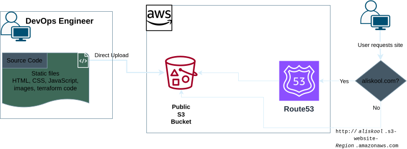

A private bucket, served by CloudFront
Host a static site on S3 behind CloudFront
A private Amazon S3 bucket served through a CloudFront distribution over HTTPS, all declared in Terraform. Only CloudFront can read the bucket, so visitors never touch S3 directly. Just your files, Terraform and the AWS credentials you already have.
terraform apply · laptop → CloudFront
passing
Architecture
A private bucket, a public CloudFront URL
Terraform, run from your machine, creates a private S3 bucket and a CloudFront distribution. Visitors reach the site through CloudFront over HTTPS, and only CloudFront can read the bucket. Route 53, WAF and Certificate Manager come in later stages.

- edit files
- terraform init
- terraform plan
- terraform apply
- View website
Deploy it, change it, apply again
Clone the repository, run terraform init then terraform apply with your bucket name, and the site is live.
Open the repository
git clone git@github.com:gcodiac/aws-s3-static-site-cicd.git